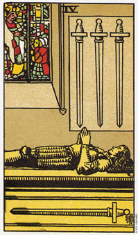

宝剑四这张牌暗示隐退及深思熟虑的一段时期。
宝剑四的牌画的是一个男人以闭目沉思的姿态，躺在教堂内的棺木上。有一把剑横置在他的下方，另三把剑则是剑尖朝下放在他上面的位置。透光的彩绘玻璃上生动的描绘一名使徒，正接受他所敬重的某个人的祝福。
这张牌暗示的是消极的思想、退却或沉思。黄色前景意味着使用中的智慧。因为黄色在传统上暗示对生活的知性态度。这牌暗示为了重获力量及理解力而离群索居。该是退下来，好好八事情想清楚，好好养病，或暂时隐居一段时间的时候了。
在四这张牌中，这个人为了想通事情而暂告退隐。假设他想清楚事情以后，就会在返回生活当中，这将是个很有意义的过程;而假设他没有再回来，他就会冒这让所有事情停滞不前的危险。塔罗牌所有的四都和强化、统合有关。这是一个和稳固或加强地位有关的行动。宝剑四代表他经由连结或组合他对人生四项及信仰来强化他自己。在反思过他以往的行为和经验之后，他终于对人生有了更深层的领悟了。
大体上的意义
宝剑四这张牌可能象征自生活中撤离：身体上退隐到自家当中，或在精神上退隐到梦想和幻想当中。它也可能暗示健康方面的问题(一段被强迫内省的事件)，或只是一个身体缺少活力的阶段。
葛临在婚姻触角之后，几乎有两年的时间都幽居在自己的家中。他几乎没有娱乐，也不去拜访朋友;相反地，他待在家里看书，学拉大提琴，并深思过去的婚姻关系。
他问道：“为什么这段婚姻会结束呢?”这是剑牌面对人生的典型态度。他需要答案，而他在独处及自我探索时找到了。
在健康方面的分析，四暗示身体出现状况的一段时期，可能是进行手术，或健康活力的低潮期。你需要一段独处的事件来重新平衡精力。
有时候这张牌可能是强调你需要多做沉思，以便重新认识在宝剑王牌当中所看到的事件的基本精神成因。而透光的窗户则暗示在你内心有条通路正在召唤着你，即使你还处于休养的状态。
两性关系上的意义
在两性关系的分析方面，宝剑四这张牌可能暗示，你正在统合或加强你自己，或对人生的理解的一个阶段或一段关系。有时候他也可能是在描述，一个伴侣为了思考生命的意义而从生活和两性关系中抽离，而对你造成伤害(影响)。
依照牌面上其他的牌可能表示意味伴侣从两性关系的肉体或精神上抽离，而遁入了书堆或某种消极的嗜好，甚至是睡眠当中。
倒立的宝剑四
倒立的宝剑四意味一段改变的时机。在这个关键时刻，你知道你不想要什么，然而你可能并不清楚自己想要什么。赶紧投入，看看到底发生了什么事。它也可以指在一段独处之后，在重返日常生活当中。
这张牌可以暗示迅速地自疾病中复原，或经过一段安宁和冷静的时期后，迅速返回生活当中。在反躬自省及探索过去种种之后，现在正是你运用你对人生新的理解的时刻了。